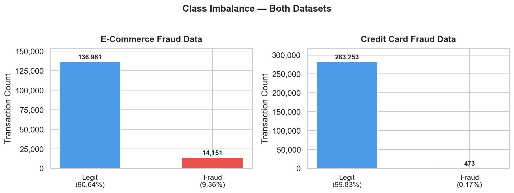
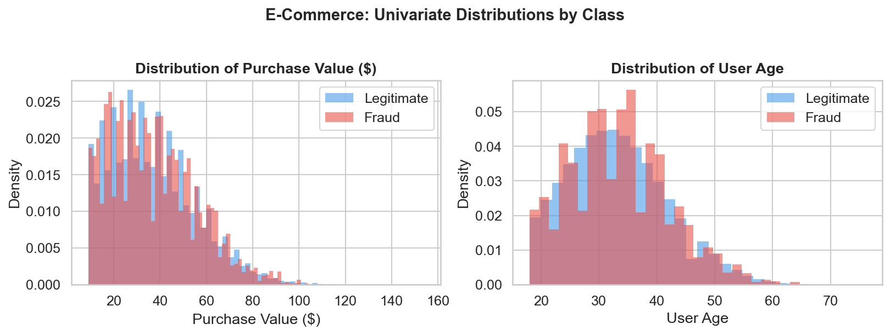
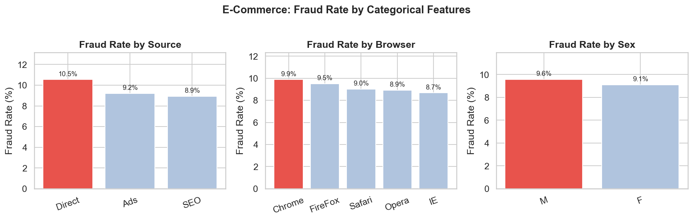
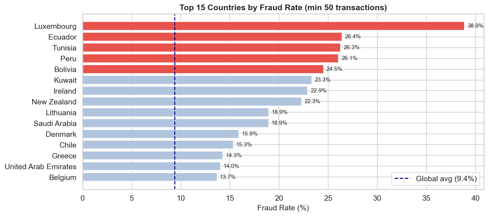
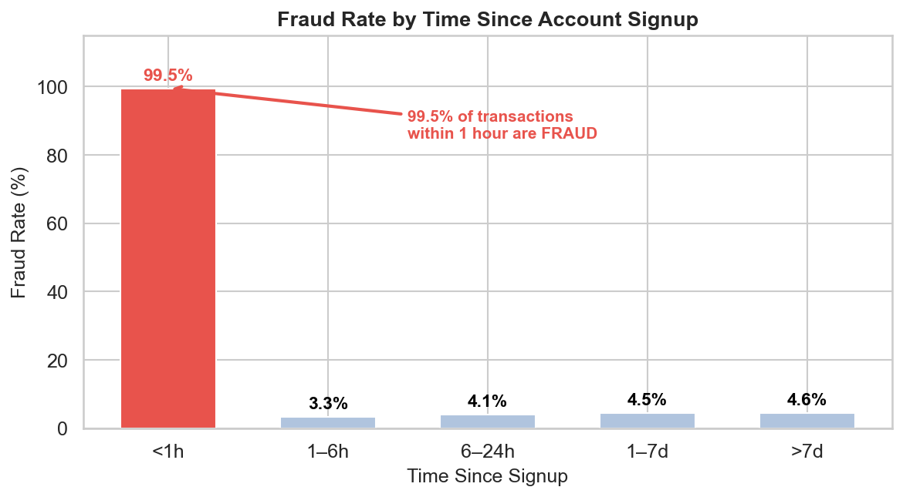
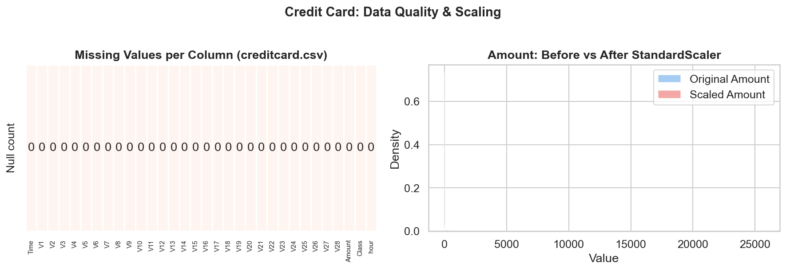
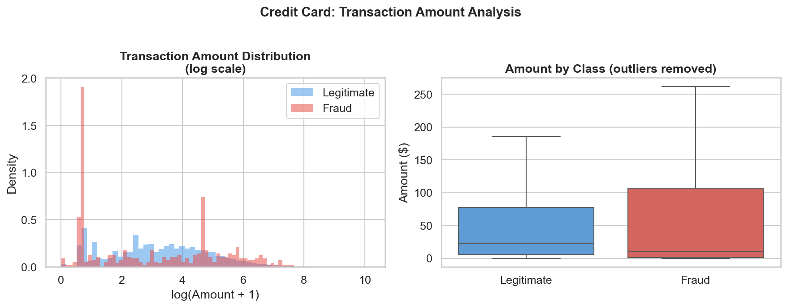
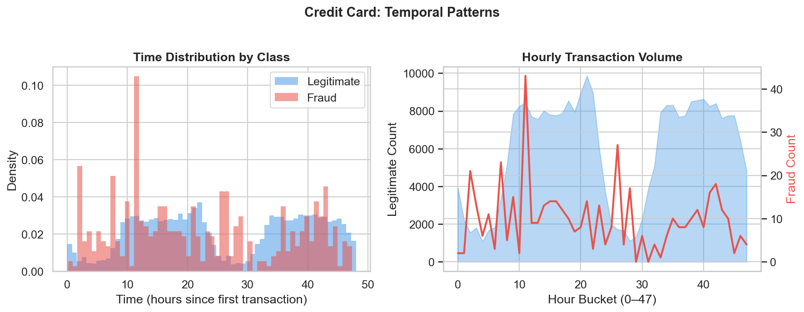
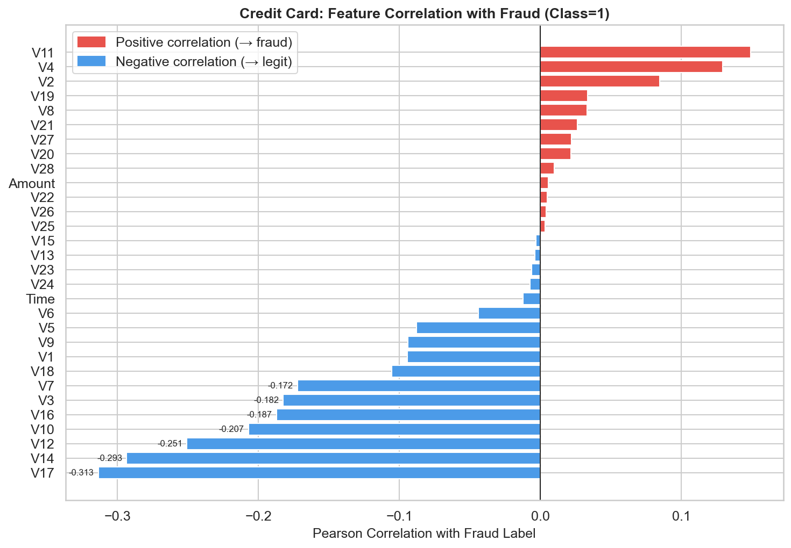
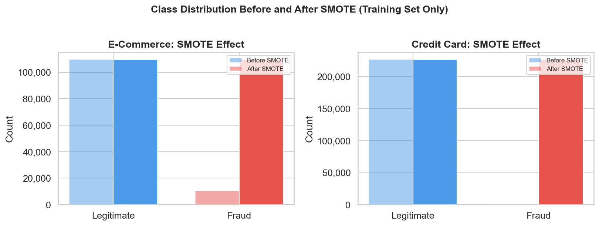

Fraud DetectionMachine LearningFinTechData Science
Building a FinTech Fraud Detection System — Interim Report 1
Fraudulent transactions are rare, sneaky, and expensive. In this first phase of Adey Innovations' fraud detection system, I analyzed 434,000 real-world transactions across two data domains — and found signals strong enough to catch fraud before a single model is trained.
Fraud detection sits at the intersection of two painful trade-offs. False positives — flagging legitimate purchases as fraud — frustrate real customers and erode trust. False negatives — missing actual fraud — cause direct financial loss. Getting the balance right requires deep data understanding before reaching for a model.
We operate two independent pipelines:

| Issue Checked | Finding | Action Taken |
|---|---|---|
| Missing values | Zero nulls across all 11 columns | None required |
| Duplicate rows | Zero duplicate records | None required |
| Data types | signup_time / purchase_time stored as strings | Parsed to datetime64 |
| ip_address format | Stored as float (e.g. 732758705.0) | Cast to int64 for range lookup |
| Target encoding | class column is int (0/1) | Confirmed — no changes |


| Source | Fraud Rate |
|---|---|
| Direct | 10.54% ← highest |
| Ads | 9.21% |
| SEO | 8.93% |
The IpAddress_to_Country.csv file maps 138,846 IP ranges to countries. A standard exact-match join fails — we need a range-based lookup using pd.merge_asof.
# Convert IPs to 64-bit integers fraud_df['ip_int'] = fraud_df['ip_address'].astype(np.int64) ip_df['lower_int'] = ip_df['lower_bound_ip_address'].astype(np.int64) ip_df['upper_int'] = ip_df['upper_bound_ip_address'].astype(np.int64) # Range join — O(n log n): find largest lower_bound ≤ ip_int merged = pd.merge_asof( fraud_sorted, ip_sorted[['lower_int','upper_int','country']], left_on='ip_int', right_on='lower_int', direction='backward' ) # Validate: ip_int must also be ≤ upper_bound merged['country'] = merged.apply( lambda r: r['country'] if r['ip_int'] <= r['upper_int'] else 'Unknown', axis=1 )

| Country | Transactions | Fraud Cases | Fraud Rate | vs Global Avg |
|---|---|---|---|---|
| Luxembourg | 72 | 28 | 38.9% | 4.2× |
| Ecuador | 106 | 28 | 26.4% | 2.8× |
| Tunisia | 118 | 31 | 26.3% | 2.8× |
| Peru | 119 | 31 | 26.1% | 2.8× |
| Bolivia | 53 | 13 | 24.5% | 2.6× |
| Global average | 151,112 | 14,151 | 9.36% | 1.0× |
Elapsed hours between account creation and the purchase transaction (mean: 1,370 hours; minimum: <1 minute):

| Time Since Signup | Fraud Rate |
|---|---|
| < 1 hour | 99.52% 🚨 |
| 1 – 6 hours | 3.33% |
| 6 – 24 hours | 4.10% |
| 1 – 7 days | 4.46% |
| > 7 days | 4.57% |
Transactions placed within 1 hour of account creation are fraudulent 99.52% of the time. This is a direct data observation — not a model output.
Cumulative transaction count per user. A burst of purchases in a short window signals account takeover or credential-stuffing attacks where stolen credentials are used before detection.
| Feature | Derivation | Fraud Mechanism |
|---|---|---|
hour_of_day | purchase_time.dt.hour | Off-hours automated attacks |
day_of_week | purchase_time.dt.dayofweek | Weekend/holiday low-coverage |
time_since_signup | (purchase − signup) / 3600 | Throwaway accounts |
tx_count_24h | Expanding user tx count | Account takeover |
country | IP range lookup | Geographic risk concentration |
| Issue Checked | Finding | Action Taken |
|---|---|---|
| Missing values | Zero nulls across all 31 columns | None required |
| Duplicate rows | 1,081 exact duplicate rows detected | Dropped — reset index |
| Final row count | 283,726 after deduplication (from 284,807) | Confirmed clean |
| Data types | All numeric (float64 / int64) | No type fixes needed |
| Feature scale | V1–V28: PCA-scaled; Amount and Time: unscaled | StandardScaler on Amount, Time only |
| Target column | Class (capital C) — 0/1 integer | Confirmed, no encoding needed |

| Step | Action | Rationale |
|---|---|---|
| 1. Deduplication | Drop 1,081 duplicate rows | Prevents training bias from repeated samples |
| 2. Scale Amount | StandardScaler → zero mean, unit variance | Amount (0–$25K) dwarfs PCA features |
| 3. Scale Time | StandardScaler → zero mean, unit variance | Time (0–172,792s) dwarfs PCA features |
| 4. V1–V28 | No scaling applied | Already PCA-transformed and normalized |
| 5. Encoding | None needed | All features are numeric post-PCA |

| Class | Mean Amount | Median Amount |
|---|---|---|
| Legitimate (0) | $88.41 | $22.00 |
| Fraud (1) | $123.87 | $9.82 |


| Feature | |r| | Direction |
|---|---|---|
| V17 | 0.3135 | Positive → fraud |
| V14 | 0.2934 | Negative → fraud |
| V12 | 0.2507 | Negative → fraud |
| V10 | 0.2070 | Negative → fraud |
| V16 | 0.1872 | Negative → fraud |
Applying SMOTE before the train/test split causes data leakage. Synthetic minority samples appear in both sets, making every metric artificially optimistic. Our rule: stratified 80/20 split first. SMOTE on training only. Test set never touched.
| Method | Mechanism | Problem | Chosen? |
|---|---|---|---|
| Random Oversampling | Duplicates minority rows | Overfitting on exact copies | ✗ |
| Random Undersampling | Removes majority rows | Discards real data | ✗ |
| SMOTE | Interpolates new synthetic rows | Slightly slower | ✓ |

Finding 1 — The 1-Hour Rule
Transactions within 1 hour of signup are fraudulent 99.52% of the time. Actionable immediately as a rule-based trigger — no model required for the highest-risk segment.
Finding 2 — Geographic Concentration
Luxembourg (38.9%), Ecuador (26.4%), Tunisia (26.3%), Peru (26.1%), Bolivia (24.5%) show fraud rates 2.6–4.2× the global average.
Finding 3 — Direct Traffic Anomaly
Direct-channel users commit fraud at 10.54% vs 8.93% for SEO — consistent with automated bot traffic bypassing referral attribution.
Finding 4 — Card-Testing Signature
Credit card fraud median ($9.82) is far below legitimate ($22.00), while fraud mean ($123.87) exceeds legitimate mean ($88.41) — the bimodal fingerprint of card-testing behavior.
Finding 5 — PCA Feature Hierarchy
V17, V14, V12, V10 carry the strongest correlation with fraud. SHAP analysis in Phase 3 will decode their behavioral meaning.
These datasets have different feature structures (194 vs 30 features), fraud rates (9.36% vs 0.17%), and dominant signals. A shared pipeline would mask each dataset's unique characteristics. Each will be trained, tuned, and evaluated independently.
| E-Commerce Pipeline | Credit Card Pipeline | |
|---|---|---|
| Features | 194 (after OHE + engineering) | 30 (V1–V28, Amount, Time) |
| Fraud rate | 9.36% | 0.17% |
| Primary signal | time_since_signup, country | V17, V14, V12 |
| Baseline | Logistic Regression | Logistic Regression |
| Ensemble | XGBoost or LightGBM | XGBoost or LightGBM |
We will use RandomizedSearchCV for efficiency. The search space targets parameters most impactful for imbalanced data:
| Parameter | Range | Why It Matters |
|---|---|---|
n_estimators | 100–1,000 | More trees reduce variance; diminishing returns after ~500 |
max_depth | 3–10 | Shallow trees generalize better on imbalanced data |
learning_rate | 0.01–0.3 | Lower rates + more estimators often wins |
scale_pos_weight | 1–600 | XGBoost's class-weight param — critical for 600:1 imbalance |
subsample | 0.6–1.0 | Reduces overfitting on SMOTE synthetic samples |
Pipeline to prevent leakage. Results reported as mean ± std dev — wide std dev flags an unstable model.
| Metric | Why Used | Red Flag |
|---|---|---|
| AUC-PR | Best metric for imbalanced classification | <0.50 = worse than random for fraud |
| F1-Score | Penalises both false positives and false negatives | <0.60 = too many missed cases |
| Confusion Matrix | Shows absolute TP/FP/TN/FN counts | High FN = fraud slipping through |
| NOT Accuracy | Misleading on imbalanced data | Score near 99.8% is a red flag, not a win |
| Phase | Task | Deliverable |
|---|---|---|
| Interim 2 | LR baseline + XGBoost/LightGBM ensemble | AUC-PR, F1, confusion matrix — both datasets |
| Interim 2 | RandomizedSearchCV hyperparameter tuning | Best params + CV mean ± std dev |
| Interim 2 | Model comparison table | Justified selection of best model per dataset |
| Final | SHAP summary + force plots | Global importance + TP/FP/FN explanations |
| Final | Business recommendations | ≥3 actionable insights tied to SHAP findings |
GitHub: github.com/maedotamha/Fraud-Cases
All three Task 1 notebooks are executed with full outputs — EDA, geolocation, feature engineering, and SMOTE.